#1 · 2327 YAGEO CORP2026-08-20 09:00
579.00
收盤 579.00 MA20 572.35 L1 569.00 / L2 564.00 / 頸線 580.00 停損 564.00 量度 596.00
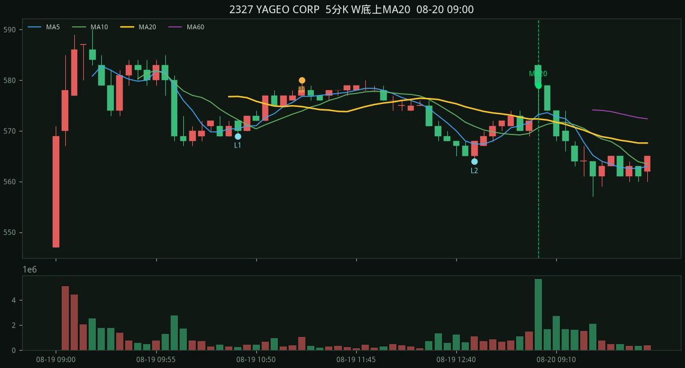
5d · 掃描 2 檔
規則：五分 K 做出 W 底（先大跌、兩個相近低點），收盤由下往上穿過五分 MA20 才通知。
收盤 579.00 MA20 572.35 L1 569.00 / L2 564.00 / 頸線 580.00 停損 564.00 量度 596.00

收盤 515.00 MA20 514.20 L1 506.00 / L2 510.00 / 頸線 520.00 停損 506.00 量度 534.00
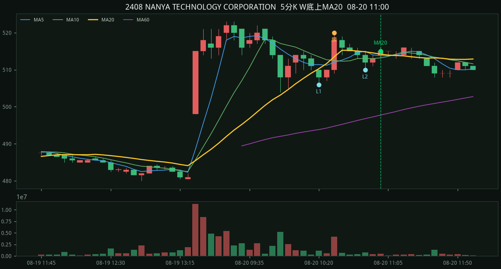
收盤 557.00 MA20 554.10 L1 550.00 / L2 550.00 / 頸線 557.00 停損 550.00 量度 564.00
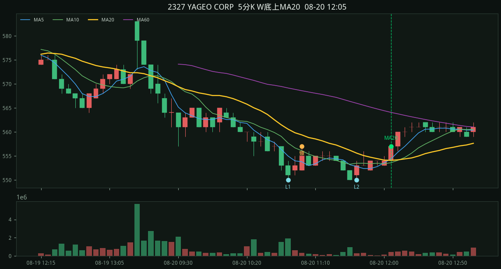
收盤 515.00 MA20 513.15 L1 510.00 / L2 508.00 / 頸線 516.00 停損 508.00 量度 524.00
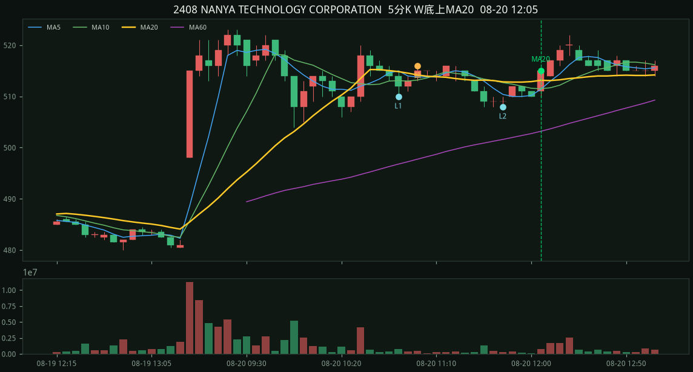
收盤 522.00 MA20 520.55 L1 510.00 / L2 512.00 / 頸線 524.00 停損 510.00 量度 538.00
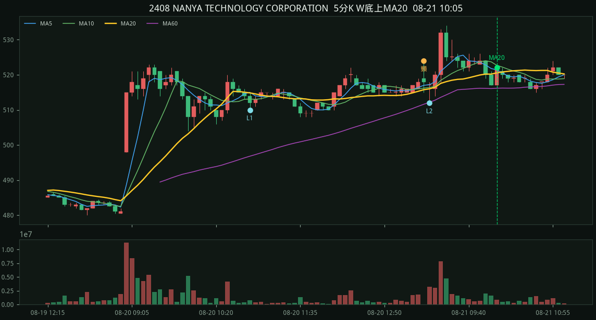
收盤 560.00 MA20 559.50 L1 553.00 / L2 555.00 / 頸線 565.00 停損 553.00 量度 577.00
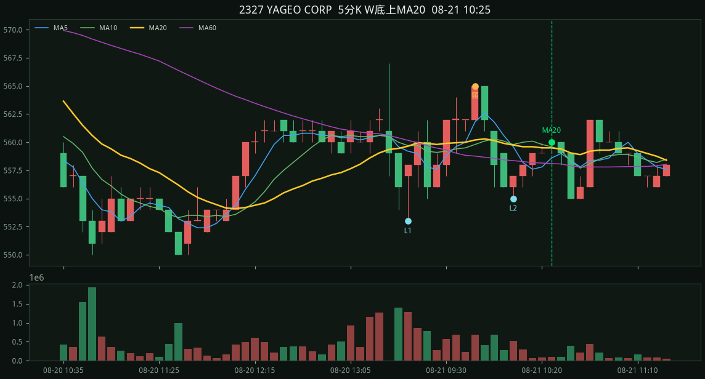
收盤 522.00 MA20 520.75 L1 517.00 / L2 515.00 / 頸線 522.00 停損 515.00 量度 529.00
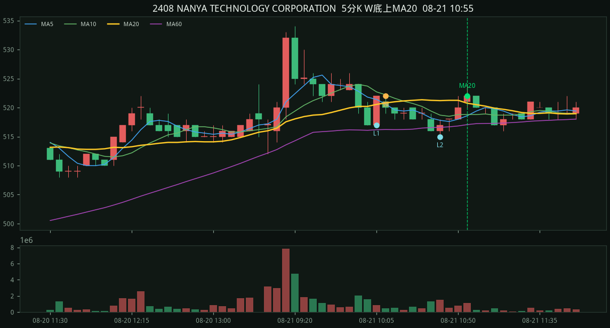
收盤 559.00 MA20 558.25 L1 553.00 / L2 556.00 / 頸線 565.00 停損 553.00 量度 577.00
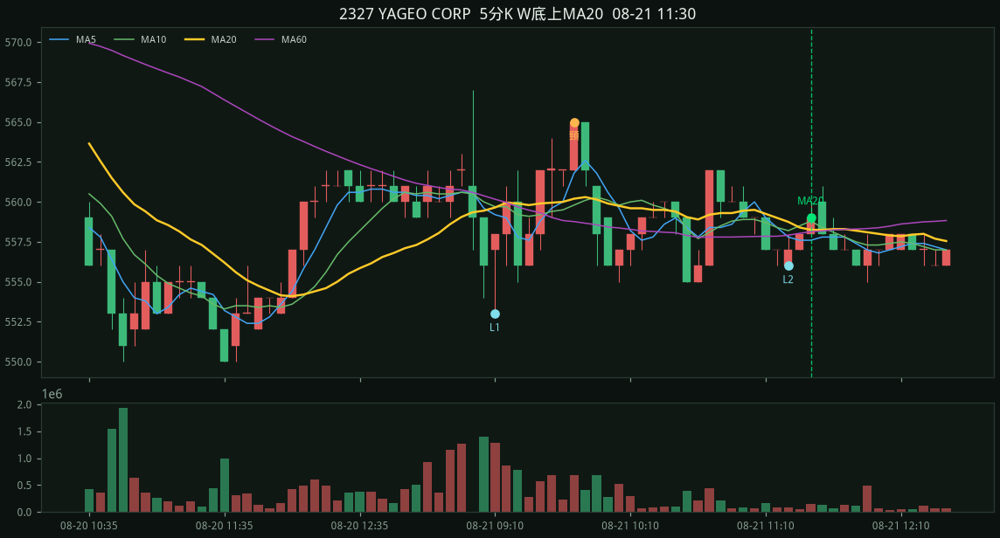
收盤 521.00 MA20 519.00 L1 517.00 / L2 516.00 / 頸線 524.00 停損 516.00 量度 532.00
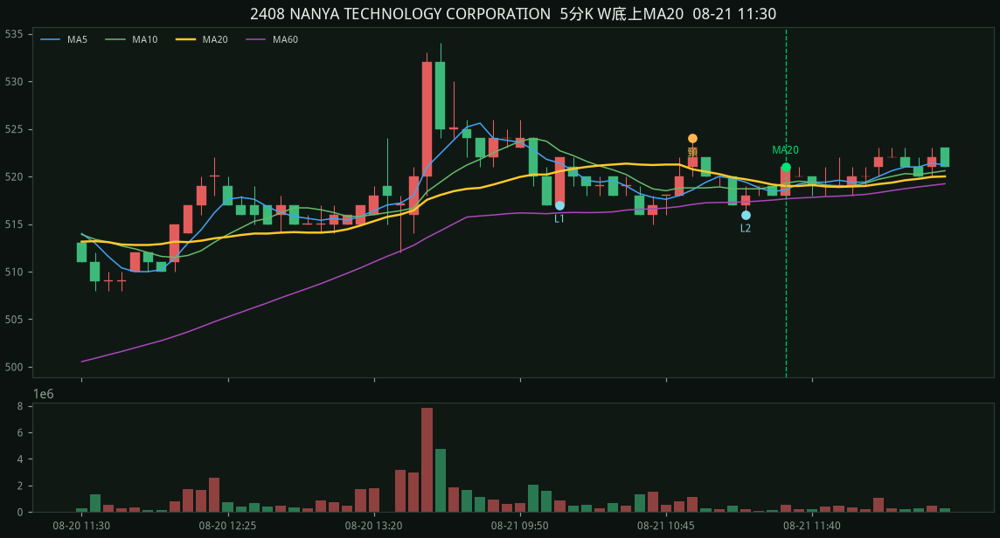
收盤 558.00 MA20 557.90 L1 553.00 / L2 555.00 / 頸線 565.00 停損 553.00 量度 577.00
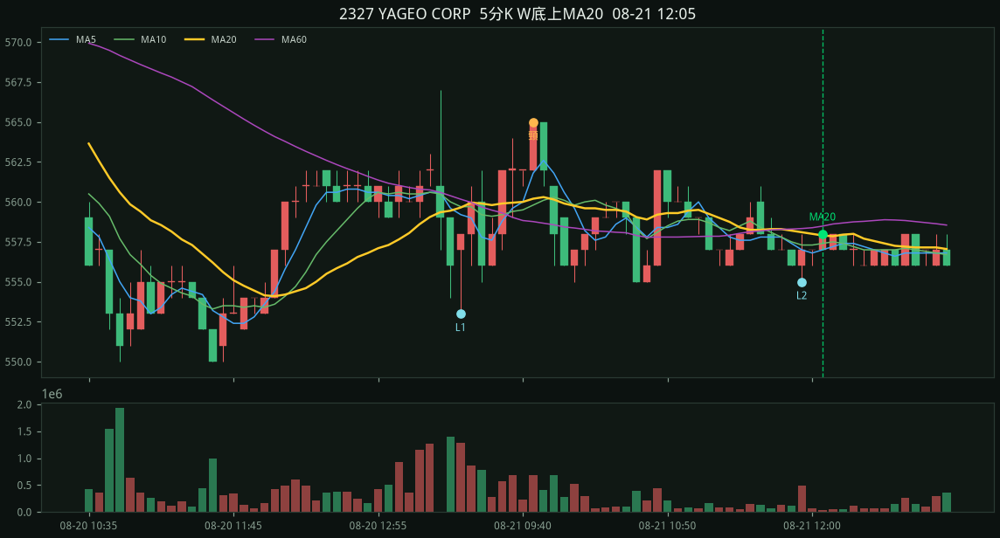
收盤 527.00 MA20 525.45 L1 518.00 / L2 520.00 / 頸線 538.00 停損 518.00 量度 558.00
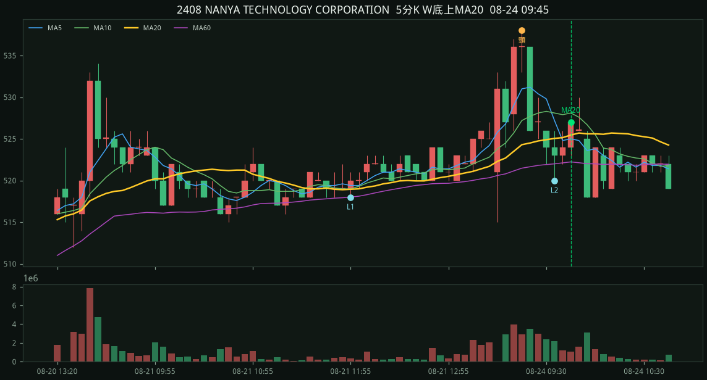
收盤 561.00 MA20 560.75 L1 563.00 / L2 558.00 / 頸線 567.00 停損 558.00 量度 576.00
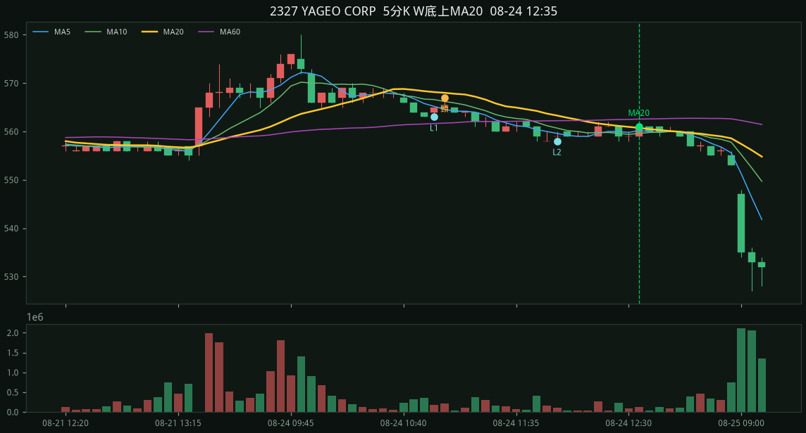
收盤 521.00 MA20 518.55 L1 515.00 / L2 515.00 / 頸線 523.00 停損 515.00 量度 531.00
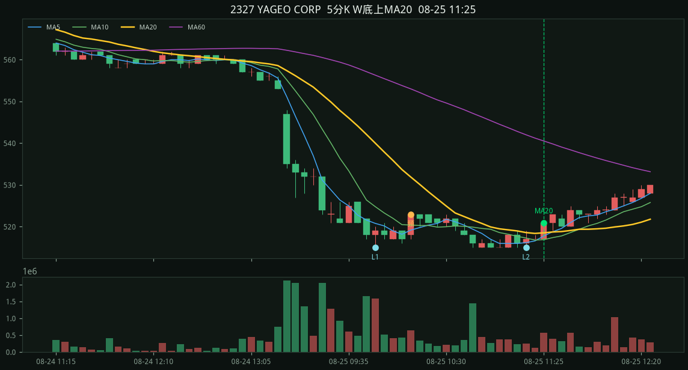
收盤 487.00 MA20 484.43 L1 480.00 / L2 481.00 / 頸線 491.00 停損 480.00 量度 502.00